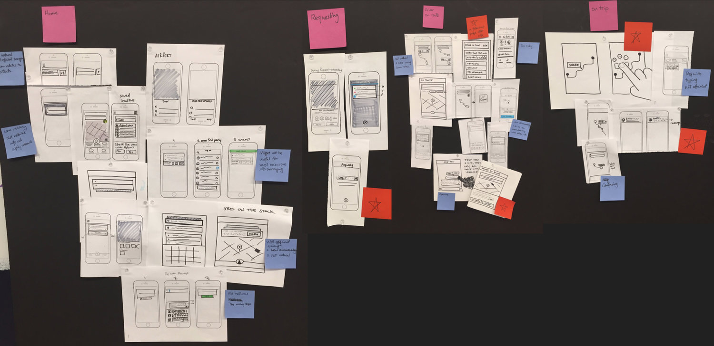
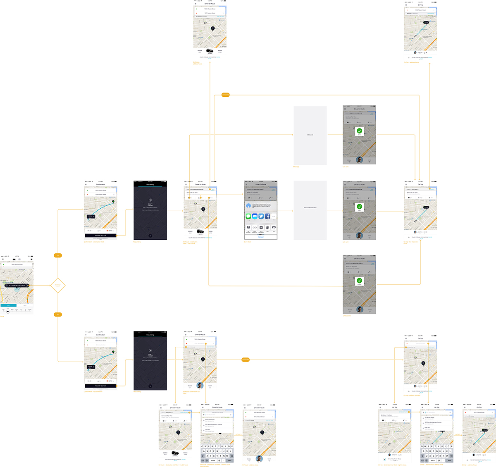
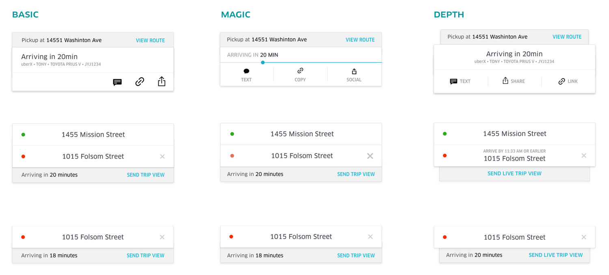

My role
UX/UI Design, Prototyping
Platform
iOS
Tools
Sketch, Framer
Timeline
July 2017 - August 2017
Overview
This project is about redesigning the trip sharing feature, which allows your friends to see your real-time location on map, estimated arrival time and driver info.
With insights gathered from the previous design, Trip Sharing 2.0 had two main goals:
- 1.
Make trip sharing an integral part of the core ride requesting flow.
- 2.
Keep increasing percentage of shared trips in all trips.
Design
The project took us three weeks in total. We spent the first week understanding the problem, brainstorming, coming up with a lot of design concepts, and we narrowed down on one design concept to dive deeper into. During the second week, we mapped the UX flow, considered different situations and edge cases, and came up with various design mockups. Besides, I created an interactive prototype in Framer JS to show how users can engage with this feature. In the third week, we kept discussing, finalizing the UI and the prototype, and created redlines and assets to be delivered to engineers.
Week 1: Design Concept
Figuring out the entry point for this feature was the first obstacle. Making trip sharing a natural and integral part of the ride requesting experience was not easy. Not to mention we needed to strike a balance between increasing its discoverability and not blocking the core ride requesting experience. Below are snapshots of some ideas generated at our brainstorming:
PART OF THE SKETCHES FROM BRAINSTORMING
WEEK 2: UX Design
There were three key points worth debating in the proposal —
- 1.
The entry point was set on the requesting page with the button in grey (users cannot share trip until request is successful)
- 2.
Showing the trip link in the trip-sharing-focus view.
- 3.
For users who haven't put in destination, the focus was always on address instead of the trip sharing feature (although they can still engage with the feature without destination filled)
We made the following decisions at design reviews.
The first appearance of the share-ride feature is on Driver En Route screen instead of the requesting screen
- 1.
The trip link will not be generated until the ride is successfully requested. So the earliest possible entry point is on the Driver En Route screen. Although we can show the feature in disabled status (by making the button grey), it would be weird to highlight this feature when users can’t interact with it.
- 2.
Limited engineering time was a big concern, especially given that the transition between address and sharing trip would take a lot of engineering efforts.
- 3.
Another team was planning on using the requesting page, which left us no space.
We do not show the trip link
- 1.
A trip link will be generated when a user successfully makes ride request. Tapping onto the link will lead to a webpage showing the trip info live.
- 2.
We decided to exclude the trip link in product screens because the link itself doesn’t include useful info to senders, and it brings up concern over privacy.
No flipping focus back to address after users share trips
- 1.
In the proposed UX flow, focus is shifted to address after users successfully share trips, based on the assumption that users will most likely only engage with the feature once in a trip.
- 2.
We cannot make decisions for users by assuming what users prefer to see. Not to mention this automatic shift might be too much surprise for users.
UX FLOW (VIEW PDF)
WEEK 3: UI Design and Prototyping
There were a lot of design iterations in UI Design. We started designing for UI contents in Week 2, since the contents would influence the UX flow.
We finally decided on the following three UI variations to be presented at the cross-functional design review with PMs and engineers:
UI ELEMENTS VARIATIONS
We explored three versions of the animation. The first one is Basic, which merely shows the sliding effect. Magic involves a progress bar that visually tells estimated arrival. The third version Depth gives a stronger sense of layering to the stacked cards.
ANIMATION VARIATIONS
Based on feedbacks from the design review, we decided to move forward with the basic version since it has the highest clarity and lowest cost for engineering.
Final Words
For me the hard part of interaction design is to make sure the final design is the best possible version. “Best possible” is premised on all solutions one can think of within the limited time have been explored. It is not uncommon to craft tons of iterations before a satisfying version emerges. "Best possible" also means that you can understand the pros and cons of each iteration and give rationales on why the selected version’s advantages work best in a certain project, and its cons are significantly outweighed by its pros.
My talented and hard-working teammates include: Sonya Ives, Senior Designer(my internship mentor); Paul Smith, Design Manager; Rex Ren & Sawyer Bowman, iOS Developer; Andrew Chen, Product Manager; Hanna Chang, Product Ops. Special thanks to Bradley Ryan for teaching me all the tricks of Framer JS.
Thank you for reading! Let’s talk if you have thoughts, feedbacks or suggestions!